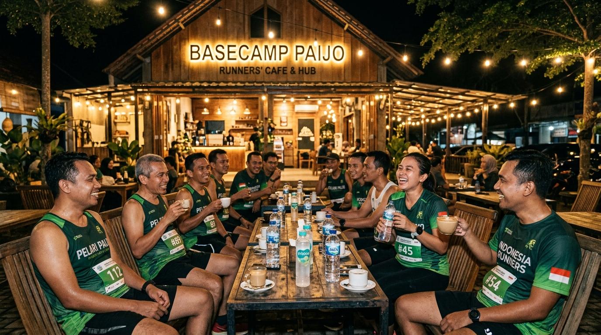

14 NOV
2026 / 19.30 WIB
Gank Kapak 2nd Anniversary Run 7K
Lari malam menyusuri perimeter kota. Dibatasi 250 pelari demi keselamatan di jalan umum. Selesai lari langsung makan bersama.
DaftarLari jam 5 pagi. Kami juga tidak yakin kenapa. Pelan boleh. Telat boleh. Tidak datang, ya sayang.
Jadwal rutin mingguan. Tanpa registrasi rumit, cukup datang tepat waktu di titik kumpul.
Bukan pose studio. Rekaman nyata keringat, nafas habis, dan sarapan setelah garis finish.

Basecamp Paijo / 21.04 WIB KM 9.8 / Pagi
KM 9.8 / Pagi
Agenda balapan resmi dan perjalanan squad ke luar kota.
Lari malam menyusuri perimeter kota. Dibatasi 250 pelari demi keselamatan di jalan umum. Selesai lari langsung makan bersama.
DaftarPerjalanan bersama ke Magelang. Kategori 10K, Half Marathon, dan Full Marathon. Akomodasi bersama dan pacer internal.
Gabung squad

Tidak ada seleksi atau iuran bulanan. Siapa saja boleh lari bersama kami.
Masukkan nama dan nomor WhatsApp agar admin bisa mencatat.
Admin mengirim tautan grup resmi untuk info titik temu dan rute mingguan.
Pilih jadwal terdekat. Pakai sepatu lari yang nyaman dan langsung sapa kami.
GANK KAPAK berdiri pada tahun 2024 dari obrolan larut malam di warung kopi sehabis lari lima kilometer yang berantakan. Tidak ada atlet pro di sini. Kami hanya kumpulan orang biasa yang memilih lelah di aspal daripada pusing di kamar.
Nama KAPAK bukan simbol kekerasan, melainkan tekad membelah batasan rasa malas dan keraguan diri sendiri. Sedangkan kata GANK menandakan prinsip kami: kamu tidak akan pernah ditinggal sendirian di rute lari, apa pun pacemu.
Kami tidak menarik iuran pendaftaran. Operasional komunitas berjalan mandiri dari sumbangan sukarela dan penjualan merchandise resmi.
Pengurus sesi rutin dan pelari terbaik bulan ini.
Menyelesaikan 128 kilometer bulan ini tanpa sekalipun mengeluh di grup obrolan.
"Dulu lima ratus meter saja ingin pulang. Sekarang kalau tidak lari malah gelisah."
Catatan rute dan tulisan seputar lari santai.
Tidur lebih cepat adalah satu-satunya jawaban logis yang sering diabaikan.
Karena tidak ada yang pantas merasa tertinggal hanya karena pacenya santai.
Waktu terbaik sebelum jalanan diambil alih oleh kemacetan harian.
Seragam latihan dan atribut resmi komunitas.
Mitra yang mendukung logistik air minum dan basecamp kami.
Pencatatan jarak tempuh bulanan via Strava Club.
Dana donasi dialokasikan untuk penyediaan air mineral galon di titik kumpul, perlengkapan P3K, dan santunan sosial bagi warga di sekitar rute lari mingguan.